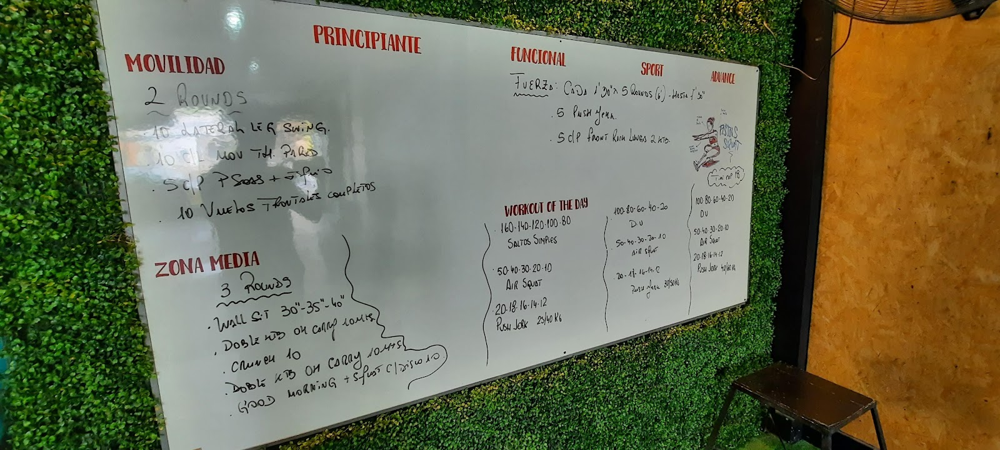

Entrenamiento personalizado
Rutinas según tu objetivo, con seguimiento para que empezar sea más simple.
Gimnasio de entrenamiento personalizado en Tandil
Rutinas a medida, máquinas completas y zona funcional con césped sintético en Gral. Rodríguez 1649 Tandil.
"OX logró romper esa barrera y de a poco, como un gatito asustado me encanta... 5/5"
Federico Algañaraz
Servicios del gimnasio
El foco está en acompañar el objetivo de cada persona con entrenamiento personalizado, máquinas y pesas completas, y una zona funcional con césped sintético.
OX Sports trabaja como gimnasio de entrenamiento personal y concentra la consulta en el teléfono 0249 437-3891. Atiende de lunes a viernes de 7:30 a 22 y los sábados de 10 a 13, una franja útil para quienes quieren entrenar antes o después de su rutina diaria. Antes de ir, conviene llamar para coordinar horarios y consultar los planes disponibles; el punto fuerte que se repite en las reseñas es que los instructores ajustan el trabajo según objetivos, técnica y ejecución.
Rutinas según tu objetivo, con seguimiento para que empezar sea más simple.
Equipamiento de musculación y trabajo de fuerza dentro de la sala real de OX.
El césped sintético aparece como espacio de movimiento, técnica y circuitos.

La cancha bajo el gimnasio
La sala combina máquinas, pesas y zona funcional. El resultado es un espacio directo, sin promesas exageradas: llamás, consultás horarios y empezás con una rutina orientada.
La pizarra y el césped ayudan a ordenar el proceso: primero se consulta, después se coordina un horario posible y finalmente se empieza con una rutina orientada. La sala muestra el equipamiento de fuerza, mancuernas y máquinas que también aparece mencionado por quienes entrenan ahí.
Lo que cuentan los que entrenan ahí
"OX logró romper esa barrera y de a poco, como un gatito asustado me encanta... 5/5"
"Las rutinas que elaboran son siempre orientadas a los objetivos que uno tiene, jamás son a mano alzada o "estándares" como para cumplir así nomas."
Consultá tu plan
Teléfono directo y horario extendido de lunes a sábado.
0249 437-3891